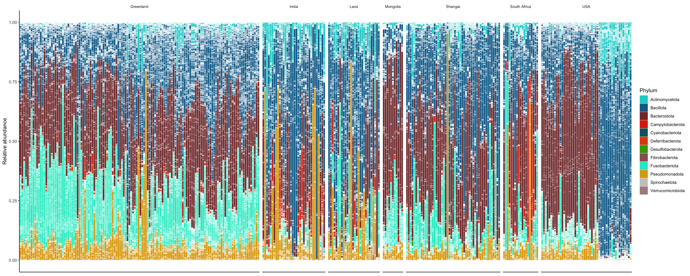
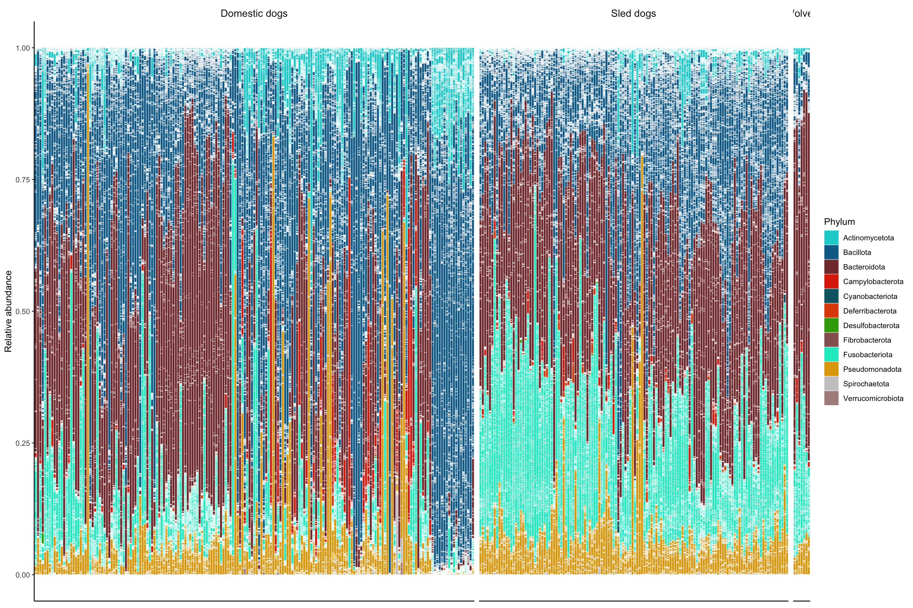

Chapter 5 Community composition
5.1 Filter data
load("data/data.Rdata")
genome_metadata <- genome_metadata %>%
mutate(phylum = case_when(
phylum == "Bacillota_A" ~ "Bacillota",
phylum == "Bacillota_C" ~ "Bacillota",
phylum == "Bacillota_B" ~ "Bacillota",
phylum == "Bacillota_I" ~ "Bacillota",
TRUE ~ phylum))
remove_sled <- read_csv("data/sample_metadata.csv") %>%
filter(season=="winter")
sample_metadata <- sample_metadata %>%
mutate(country = if_else(country == "Shangai domestic dog", "Shangai", country)) %>%
filter(!sample %in% remove_sled$sample) %>%
mutate(
dog_type = case_when(
breed == "Wolf" ~ "wolf",
country == "Greenland" ~ "sled_dog",
TRUE ~ "domestic"
)
)
genome_counts_filt <- genome_counts_filt %>%
select(one_of(c("genome",sample_metadata$sample)))%>%
filter(rowSums(. != 0, na.rm = TRUE) > 0) %>%
select_if(~!all(. == 0))
genome_metadata <- genome_metadata %>%
semi_join(., genome_counts_filt, by = "genome") %>%
arrange(match(genome,genome_counts_filt$genome))
genome_tree <- keep.tip(genome_tree, tip=genome_metadata$genome)5.2 Taxonomy overview
5.2.1 Stacked barplot
genome_counts_filt %>%
mutate_at(vars(-genome),~./sum(.)) %>%
pivot_longer(-genome, names_to = "sample", values_to = "count") %>%
left_join(., genome_metadata, by = join_by(genome == genome)) %>%
left_join(., sample_metadata, by = join_by(sample == sample)) %>%
filter(count > 0) %>%
ggplot(., aes(x=sample,y=count, fill=phylum, group=phylum)) +
geom_bar(stat="identity", colour="white", linewidth=0.1) +
scale_fill_manual(values=phylum_colors) +
facet_grid(~ country, scale="free", space="free")+
guides(fill = guide_legend(ncol = 1)) +
theme(
axis.title.x = element_blank(),
panel.background = element_blank(),
panel.border = element_blank(),
panel.grid.major = element_blank(),
panel.grid.minor = element_blank(),
strip.background = element_rect(fill = "white"),
strip.text = element_text(size = 8, lineheight = 0.6),
strip.placement = "outside",
axis.text.x = element_blank(), axis.ticks.x = element_blank(),
axis.line = element_line(linewidth = 0.5, linetype = "solid", colour = "black")) +
labs(fill="Phylum",y = "Relative abundance",x="Samples")
genome_counts_filt %>%
mutate(across(-genome, ~ . / sum(.))) %>%
pivot_longer(-genome, names_to = "sample", values_to = "count") %>%
left_join(., genome_metadata, by = join_by(genome == genome)) %>%
left_join(., sample_metadata, by = join_by(sample == sample)) %>%
filter(count > 0) %>%
ggplot(., aes(x=sample,y=count, fill=phylum, group=phylum)) +
geom_bar(stat="identity", colour="white", linewidth=0.1) +
scale_fill_manual(values = phylum_colors) +
facet_grid(~factor(dog_type, labels=c("domestic" = "Domestic dogs", "sled_dog" = "Sled dogs", "wolf" = "Wolves")), scale="free", space="free")+
guides(fill = guide_legend(ncol = 1)) +
theme(
axis.title.x = element_blank(),
panel.background = element_blank(),
panel.border = element_blank(),
panel.grid.major = element_blank(),
panel.grid.minor = element_blank(),
strip.background = element_rect(fill = "white"),
strip.text = element_text(size = 12, lineheight = 0.6),
strip.placement = "outside",
axis.text.x = element_blank(),
axis.ticks.x = element_blank(),
axis.line = element_line(
linewidth = 0.5,
linetype = "solid",
colour = "black"
)
) +
labs(fill = "Phylum", y = "Relative abundance", x = "Samples")
Number of bacteria phyla
genome_metadata %>%
filter(domain == "Bacteria")%>%
dplyr::select(phylum) %>%
unique() %>%
pull() %>%
length()[1] 12Number of Archaea phyla
genome_metadata %>%
filter(domain == "Archaea")%>%
dplyr::select(phylum) %>%
unique() %>%
pull() %>%
length()[1] 05.2.2 Genus and species annotation
Number of MAGs without species-level annotation
genome_metadata %>%
filter(species == "") %>%
summarize(Mag_nospecies = n())%>%
select(Mag_nospecies) %>%
pull()[1] 374total_mag_phylum <- genome_metadata %>%
group_by(phylum) %>%
summarize(count_total = n())
genome_metadata %>%
filter(species == "") %>%
group_by(phylum) %>%
summarize(count_nospecies = n()) %>%
left_join(total_mag_phylum, by = join_by(phylum == phylum)) %>%
mutate(percentage_nosp=100*count_nospecies/count_total) %>%
arrange(percentage_nosp) %>%
tt()| phylum | count_nospecies | count_total | percentage_nosp |
|---|---|---|---|
| Fusobacteriota | 5 | 153 | 3.267974 |
| Actinomycetota | 29 | 229 | 12.663755 |
| Campylobacterota | 15 | 81 | 18.518519 |
| Pseudomonadota | 42 | 146 | 28.767123 |
| Bacillota | 226 | 688 | 32.848837 |
| Deferribacterota | 1 | 3 | 33.333333 |
| Bacteroidota | 49 | 138 | 35.507246 |
| Spirochaetota | 4 | 8 | 50.000000 |
| Desulfobacterota | 3 | 4 | 75.000000 |
Percentage of MAGs without species-level annotation
nmags <- nrow(genome_metadata)
nonspecies <- genome_metadata %>%
filter(species == "") %>%
nrow()
perct <- nonspecies*100/nmags
perct[1] 25.66918Number of MAGs without genera-level annotation
115.2.3 Phylum relative abundances
phylum_summary <- genome_counts_filt %>%
mutate_at(vars(-genome),~./sum(.)) %>%
pivot_longer(-genome, names_to = "sample", values_to = "count") %>%
left_join(sample_metadata, by = join_by(sample == sample)) %>%
left_join(genome_metadata, by = join_by(genome == genome)) %>%
group_by(sample,phylum,dog_type) %>%
summarise(relabun=sum(count))5.2.3.1 Origin: Dogs vs Sled dogs vs Wolves
phylum_summary %>%
group_by(phylum) %>%
summarise(
total_mean = mean(relabun * 100, na.rm = T),
total_sd = sd(relabun * 100, na.rm = T),
Dog_mean = mean(relabun[dog_type == "domestic"] * 100, na.rm = T),
Dog_sd = sd(relabun[dog_type == "domestic"] * 100, na.rm = T),
Sled_dog_mean = mean(relabun[dog_type == "sled_dog"] * 100, na.rm = T),
Sled_dog_sd = sd(relabun[dog_type == "sled_dog"] * 100, na.rm = T),
Wolf_mean = mean(relabun[dog_type == "wolf"] * 100, na.rm = T),
Wolf_sd = sd(relabun[dog_type == "wolf"] * 100, na.rm = T)
) %>%
mutate(
total = str_c(round(total_mean, 3), "±", round(total_sd, 3)),
Domestic_dogs = str_c(round(Dog_mean, 3), "±", round(Dog_sd, 3)),
Sled_dogs = str_c(round(Sled_dog_mean, 3), "±", round(Sled_dog_sd, 3)),
Wolves = str_c(round(Wolf_mean, 3), "±", round(Wolf_sd, 3))
) %>%
arrange(-total_mean) %>%
dplyr::select(phylum, total, Domestic_dogs, Sled_dogs, Wolves) %>%
tt()| phylum | total | Domestic_dogs | Sled_dogs | Wolves |
|---|---|---|---|---|
| Bacillota | 35.865±19.914 | 41.871±21.939 | 28.627±12.756 | 11.541±4.234 |
| Bacteroidota | 30.594±19.753 | 28.644±23.038 | 31.983±12.879 | 56.336±10.036 |
| Fusobacteriota | 16.516±14.463 | 9.976±12.345 | 25.515±12.448 | 22.244±8.591 |
| Pseudomonadota | 9.205±13.329 | 9.149±15.913 | 9.466±8.949 | 5.846±1.751 |
| Actinomycetota | 5.247±6.791 | 6.96±7.921 | 2.964±3.893 | 2.359±2.012 |
| Campylobacterota | 2.217±6.853 | 3.166±8.835 | 0.899±1.531 | 1.646±1.629 |
| Deferribacterota | 0.174±0.41 | 0.045±0.19 | 0.367±0.552 | 0±0.001 |
| Spirochaetota | 0.112±0.88 | 0.135±1.155 | 0.084±0.158 | 0.002±0 |
| Cyanobacteriota | 0.028±0.158 | 0.004±0.007 | 0.063±0.245 | 0.013±0.005 |
| Desulfobacterota | 0.024±0.134 | 0.018±0.156 | 0.032±0.099 | 0.012±0.031 |
| Verrucomicrobiota | 0.016±0.147 | 0.027±0.193 | 0±0 | 0±0 |
| Fibrobacterota | 0.003±0.046 | 0.005±0.06 | 0±0 | 0.001±0.001 |
Using CLR transformation
set.seed(0206)
phylo_counts <- genome_counts_filt %>%
column_to_rownames("genome") %>%
otu_table(., taxa_are_rows = TRUE)
phylo_geno_meta <- genome_metadata %>%
column_to_rownames(var="genome")%>%
as.matrix()%>%
tax_table()
physeq_genome_filt <- phyloseq(phylo_counts,phylo_geno_meta)
physeq_phylum <- tax_glom(physeq_genome_filt, taxrank = "phylum")
physeq_phylum_clr <- microbiome::transform(physeq_phylum, "clr")
df <- psmelt(physeq_phylum_clr)
results <- df %>%
left_join(., sample_metadata, by=join_by("Sample"=="sample")) %>%
group_by(phylum) %>%
do({
model <- lm(Abundance ~ dog_type, data = .)
as.data.frame(pairs(emmeans(model, ~ dog_type), adjust = "BH"))
}) %>%
ungroup()%>%
filter(p.value < 0.05) # A tibble: 12 × 7
phylum contrast estimate SE df t.ratio p.value
<chr> <chr> <dbl> <dbl> <dbl> <dbl> <dbl>
1 Actinomycetota domestic - sled_dog 1.84 0.155 319 11.9 6.63e-27
2 Bacillota domestic - sled_dog 1.48 0.114 319 12.9 1.53e-30
3 Bacteroidota domestic - sled_dog 0.325 0.152 319 2.14 3.30e- 2
4 Campylobacterota domestic - sled_dog 1.42 0.183 319 7.76 3.58e-13
5 Cyanobacteriota domestic - sled_dog -1.85 0.173 319 -10.7 1.89e-22
6 Deferribacterota domestic - sled_dog -5.91 0.434 319 -13.6 3.43e-33
7 Desulfobacterota domestic - sled_dog -0.745 0.223 319 -3.34 2.83e- 3
8 Fibrobacterota domestic - sled_dog 2.12 0.208 319 10.2 9.61e-21
9 Fusobacteriota domestic - sled_dog -0.602 0.169 319 -3.56 1.28e- 3
10 Pseudomonadota domestic - sled_dog 0.474 0.168 319 2.83 1.51e- 2
11 Spirochaetota domestic - sled_dog -1.22 0.206 319 -5.95 2.15e- 8
12 Verrucomicrobiota domestic - sled_dog 2.67 0.343 319 7.79 2.83e-13# A tibble: 5 × 7
phylum contrast estimate SE df t.ratio p.value
<chr> <chr> <dbl> <dbl> <dbl> <dbl> <dbl>
1 Bacillota domestic - wolf 1.54 0.384 319 4.02 0.000109
2 Bacteroidota domestic - wolf -1.18 0.510 319 -2.31 0.0327
3 Cyanobacteriota domestic - wolf -2.03 0.584 319 -3.49 0.000841
4 Deferribacterota domestic - wolf 3.04 1.46 319 2.09 0.0377
5 Fusobacteriota domestic - wolf -1.40 0.569 319 -2.47 0.0212 # A tibble: 6 × 7
phylum contrast estimate SE df t.ratio p.value
<chr> <chr> <dbl> <dbl> <dbl> <dbl> <dbl>
1 Bacteroidota sled_dog - wolf -1.50 0.514 319 -2.92 0.0113
2 Campylobacterota sled_dog - wolf -1.89 0.621 319 -3.04 0.00378
3 Deferribacterota sled_dog - wolf 8.95 1.47 319 6.09 0.00000000481
4 Fibrobacterota sled_dog - wolf -2.97 0.706 319 -4.21 0.0000506
5 Spirochaetota sled_dog - wolf 1.97 0.698 319 2.82 0.00757
6 Verrucomicrobiota sled_dog - wolf -2.79 1.16 319 -2.40 0.0257